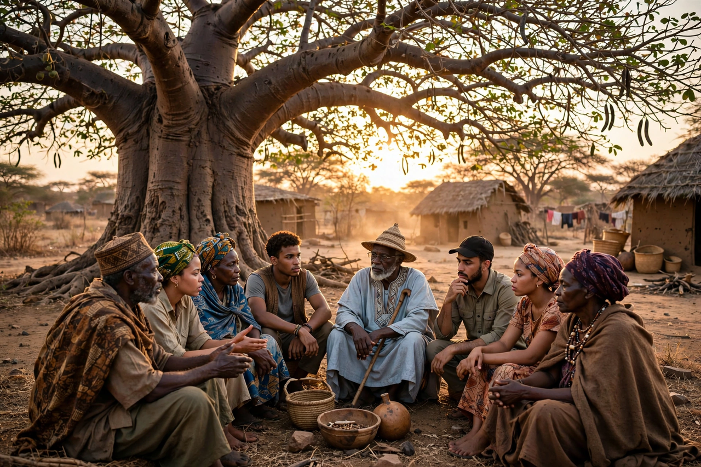

From Wikipedia, the free encyclopedia
| African philosophy | |
|---|---|
| Scope | Philosophical traditions of Africa and the African diaspora |
| Major themes | Communal personhood (ubuntu), ethnophilosophy debate, sage philosophy, Négritude, Afrocentricity, decolonisation |
| Key figures | Oruka, Wiredu, Hountondji, Mbiti, Gyekye, Senghor, Appiah |
| Ancient roots | Philosophy of ancient Egypt; Ethiopian philosophy (Zera Yacob) |

African philosophy is the philosophical discourse produced by Africans and people of African descent, and the traditions of thought of the African continent — from the moral and metaphysical reflections of ancient Egypt and seventeenth-century Ethiopia to the professional philosophy practised in African universities today. The field was long defined by a founding argument: whether "African philosophy" names the collective worldviews of African cultures, the critical work of individual African thinkers, or both — and by the effort to do rigorous philosophy in and about Africa without merely copying European categories.
Egyptian texts such as the teachings of Ptahhotep and the later wisdom literature are among the world's oldest philosophical writings, organised around maat — truth, order and justice. In seventeenth-century Ethiopia, Zera Yacob's Hatata ("Inquiry") subjected religious claims to rational scrutiny, arguing from reason for God's existence and against the contradictions of revealed doctrines — a text brought to scholarly attention in the twentieth century and now central to debates about philosophy's geography. Across the continent, oral traditions preserved metaphysics, ethics and political theory in proverbs, praise poetry, legal maxims and the discourses of elders.
The Belgian missionary Placide Tempels's Bantu Philosophy (1945) argued that Bantu languages encode a systematic ontology of forces; it was both foundational and fiercely criticised for treating African thought as collective and anonymous. John Mbiti's African Religions and Philosophy (1969) gave the classic account of communal and temporal concepts ("I am because we are"), while Paulin Hountondji's African Philosophy: Myth and Reality (1976) attacked "ethnophilosophy" as an invented unanimity and demanded critical, written, individual philosophy. Henry Odera Oruka proposed "sage philosophy" — the documented thought of individual wise men and women within oral cultures — as a middle path, and Kwasi Wiredu pursued conceptual decolonisation, notably analysing truth, person and mind in his own Akan language. Kwame Gyekye defended a moderate communitarianism in Akan thought.
The southern African ethic of ubuntu — personhood constituted through community ("a person is a person through other persons") — became globally influential through the work of Desmond Tutu and the South African transition, and anchors a major literature in ethics and political philosophy. In the francophone world, Léopold Sédar Senghor and Aimé Césaire's Négritude asserted black cultural value against colonial assimilation, while Frantz Fanon's analyses of colonial psychology remain foundational for postcolonial thought. The African diaspora contributes traditions from W. E. B. Du Bois's "double consciousness" to contemporary Africana philosophy (Kwame Anthony Appiah, Lucius Outlaw, and others), and Afrocentricity (Molefi Kete Asante) proposes Africa as the subject rather than object of history.
Philosophy · Ubuntu · Indian philosophy · Chinese philosophy · Feminist philosophy